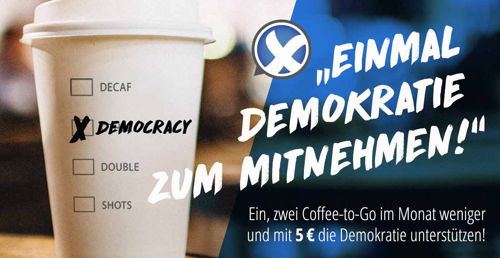
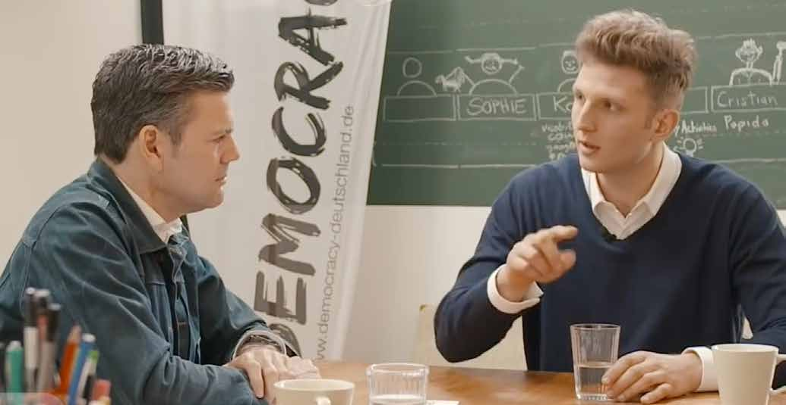

Hallo (Liebe|Lieber) ${NAME},
Drei Monate sind vergangen seit dem letzten Newsletter. Umso mehr freut es uns, ihnen wieder ein paar Neuigkeiten mitzuteilen. Also anschnallen und bereitmachen für die Juniausgabe.
Wir wünschen viel Spaß beim Lesen und danken Ihnen für Ihre Unterstützung, Herzliche Grüße
Ihr TEAM DEMOCRACY
Marius Krüger, Ulf Gebhardt & Manuel Ruck
02 Anstellung(en)
03 Macher-Interview
04 Was in der Zwischenzeit noch geschah
05 Vortragsreise
01 Zahlen, Daten, Fakten
Die DEMOCRACY App wurde bis dato 49.894 Mal für Android und 19.369
Mal für iOS heruntergeladen. Wir
kratzen damit stark an der 70.000 Downloads-Marke. Unser
Ziel, bis Ende April die 100.000-Marke zu schaffen, haben wir damit
nicht erreicht, dafür sind wir
in Sachen Finanzierung aber einen riesen Schritt weiter
gekommen: Aktuell unterstützen uns 653 PatInnen mit einem
monatlichen Dauerauftrag und bringen so planungssichere
5.279€ pro Monat (!) zusammen.
Wahnsinn!
02 Anstellung(en)
Ein außerordentlicher Dank gilt an dieser Stelle genau diesen Patinnen und Paten, die eine erneute Anstellung von Marius beim DEMOCRACY Deutschland e.V. zum 01.06.2019 möglich gemacht haben. Ab sofort kann er dem Projekt damit wieder seine volle Aufmerksamkeit widmen und DEMOCRACY öffentlichkeitswirksam verbreiten. Damit DEMOCRACY auch technisch weiterentwickelt bzw. die derzeitigen Fehler behoben werden können, braucht es noch mindestens 1.000€ pro Monat. Ulf steht schon in den Startlöchern. Mit ein, zwei Coffee-to-Go weniger im Monat, kriegen wir das gemeinsam hin, oder? Wir danken ihnen für ihren Support.
03 Macher-Interview
Diese Crowdpower kam nicht von ungefähr. Das Macher-Interview war die Raketenstartbahn für unsere 50%-Strukturfinanzierung. Bis jetzt haben 67.500 Personen das Interview auf YouTube gesehen. Wir bedanken uns hiermit noch einmal ganz herzlich bei jedem einzelnen von Ihnen, der mitgeholfen hat, uns so durchstarten zu lassen. Das war groß!
04 Was in der Zwischenzeit noch geschah
Was noch so geschah? Im Mai haben wir eine Dokumentation mit dem MDR zum Thema “Wie wählen wir in Zukunft” gedreht, die im August diesen Jahres erscheinen wird.
Beim diesjährigen Deutschen Stiftungstag in Mannheim saßen wir am 05.06.mit Marina Weisband auf einem Panel zur on+offline-Debattenkultur und vergangenen Sonntag standen wir das erste Mal gemeinsam mit Daniele Ganser auf der Bühne, um im Rahmen seiner Vortragsreihe “Wahrheit, Mut & Liebe” die DEMOCRACY App vorzustellen.
05 Vortragsreise
Die zweite Jahreshälfte wird voll im Zeichen der Verbreitung von DEMOCRACY stehen. Wir planen eine Vortragsreise samt Spendenkampagne, um sowohl Ulf als auch Manuel spätestens zu Beginn des Jahres 2020 hauptamtlich ins Projekt zurück- zuholen. Einige Tourdates sind schon fix. Es wartet ein tolles Live-Programm mit jeder Menge Enthusiamus auf Sie. Wenn Sie Interesse daran haben, dass wir auch in Ihre Stadt kommen, sprechen uns einfach an und wir planen eine gemeinsame Veranstaltung!
Spendenkonto
Unsere Bankverbindung für direkte Spenden, Überweisungen oder Daueraufträge lautet:
| Kontoinhaber | DEMOCRACY Deutschland e.V. |
| IBAN | DE33 5003 1000 1049 7560 00 |
| BIC | TRODDEF1 |
Für den Verein DEMOCRACY Deutschland e.V. ist mit Bescheid des Finanzamts Göttingen vom 23.08.2017 die Einhaltung der satzungsmäßi- gen Voraussetzungen nach den §§ 51, 59, 60 und 61 AO festgestellt worden (Nachweis der Gemeinnützigkeit; Satzung). Deine Spenden sind daher steuerlich abzugsfähig. Für Spenden unter 200€ jährlich genügt der Zahlungsnachweis (z. B. Kontoauszug) zusammen mit unserem Ver- einfachten Zuwendungsnachweis. Wenn Du eine separate Zuwendungsbestätigung benötigst, schreib uns bitte eine E-Mail oder gib in Deiner Überweisung Deine Wohnadresse an.
DEMOCRACY Deutschland e.V. (gemeinnützig)
Industriestraße 10
37079 Göttingen
Telefon:
+49 176 470 40 213
E-Mail:
contact@democracy-deutschland.de